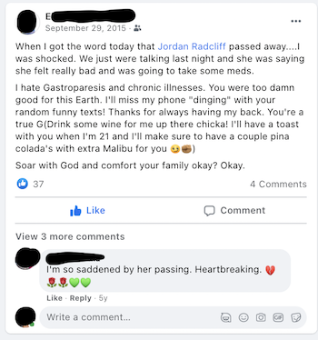
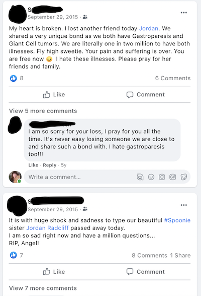
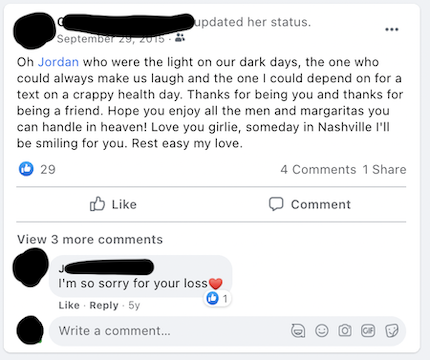
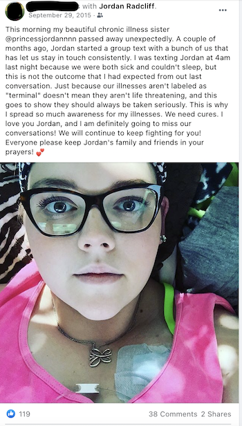

With a quick google search of my grandmother’s name, I can find her obituary memorial page.
With another search I can find a similar page on a different memorial site for my grandfather.
And finally, my sister’s
Memorial Platforms + Social Media
Online memorial pages like the ones above allow for certain interactions, like donating in the lost loved one's name, or adding an entry to the guest book in a loved's ones honor. These platform features build a particular infrastructure that supports a certain kind of interaction, much like more recognizable social media platforms, like Facebook.
This represents a restructuring and blending of real-life, reality based—and even religious based—mourning and memory practices with online practices, something that van Dijck (2013) suggests happens generally with the emergence of social networking sites. Online places of memorialization are attempting to mimic some practices of reality, but in effect, are influencing and even changing practices around death on a digital platform infrastructure.
In my own life, I've experienced the way it feels to encounter these materials circulating on Facebook, that bring with them nuanced emotions and affective experiences.
When my sister passed away in 2015, almost as soon as I learned what had happened, Facebook notifications were pouring in. I was being tagged in posts, images, videos, and in addition people were posting condolences on my sister's Facebook feed.
I remember having a range of feelings about this experience, from not caring at all, to wanting to tell people not to post anything because Jordan was MY sister, not their sister, to feeling joy at seeing pictures or videos I hadn't seen in years. This presented a very nuanced navigation for me, and many friends and family members.
Even today, 5 years later, my mom still experiences a lot of pain when she is alerted of Facebook memories of my sister.
Facebook as Complex Mediated Memory with Platform Power
Beginning in 2011, Facebook began offering the feature of Memorialization where, after a user has died and the death is confirmed (usually with an obituary verification sent to Facebook by a surviving family member or friend), the account of the deceased user will become “memorialized,” or converted into a flattened, simplified page that only allows one-way communication and can no longer be logged into.
This seemed like a good idea to maintain archival provenance and agency within the account, but, when it was first offered, the feature caused trusted family to lose access to any control of the account (Acker and Brubaker 2014).
In response, in 2015, Facebook released the capability of adding a “legacy contact,” which allows users to choose another Facebook user to manage their account upon death. This means that even after the profile of a dead user is memorialized, there’s still someone who can log in, control posts, delete posts, and generally manage the account.
****
**
Then, in 2019, Facebook advertised a new feature to promote and encourage users to interact with the memorialized pages of lost loved ones. This feature is called the "Tributes" feature, that allows memorialized accounts to have a separate section for users to leave tributes to the lost loved one.
The introduction of the press release says: "People turn to Facebook to find community during life’s highs and lows. We know the loss of a friend or family member can be devastating — and we want Facebook to be a place where people can support each other while honoring the memory of their loved ones."
Facebook comes across in messages as somewhat well-intentioned, but promotes these features in order to keep people on the platform. This is a kind of sneaky, nasty rhetoric of commodification here. With these features, grief and loss is portrayed as a reason to post, which keeps users on Facebook, generates content, and supports Facebook as a capitalist platform. This is a platform power that facebook has. At the same time, these presents a complexity. For those who have experienced loss, it is sometimes nice to have these memories.
Facebook's power as a platform also comes through it's nature as a commodifed platform of surveillance, that profits and benefits from usage, interaction, and capturing of personal data. A recent update in Apple's iOS 14 now requires users to opt in to Facebook's capturing of personal data that is sold to advertisers to create personalized ads for users. In response, Facebook campaigned to users that because of ads, Facebook is free, admonishing users for not opting-in to personalized ads. The same happened on Facebbo-owned Instagram. This recent example reveals the control and power a platform has, even with measures are put in place to limit their control.
In addition to the complexities brought in by the commodification of user data, platforms like Facebook also present a lot of unknowns for the user, because many functions, like algorithims and other platform features are hidden and proprietary. van Dijck et al. (2018) argue that “online activities hide a system whose logic and logistics are about more than facilitating: they actually shape the way we live and how society is organized” (p. 9).
Artifact Discovery
I decided it might be interesting to experiment with curating/collecting my own artifiact discovery from social media sites, related to my sister, that were posted by people around and after her death.
Scanning back through posts, one of the first things I noticed was a somewhat embarrassing video I had been tagged in with my sister from a wedding that we were flower girls in at the age of 7.
I had never seen this particular video, so it was actually a memory I was really grateful to be reminded of through this video. I remember laughing and recalling how nervous my sister and I were walking down the aisle.
In the hours, days, and weeks after my sister's death, people who knew her were posting and sharing images. Looking back, it's really heartwarming to see this interaction, but in the moment, some of these posts brought on complex feelings. Some posts allowed me in an unexpected way to discover a side of my sister that I wasn't as aware of. My sister had a chronic illness, Gastroparesis, and a bone tumor. Through her own initiative, she had connected with people around the world via social media, mostly Instagram and Facebook, and really formed a community, that I didn't understand the breadth of until her death.
The post below was posted by a friend of my sister's I didn't know. Reading this now, I feel a lot of care and gratitude for my sister's friends in the chronic illness community who knew what she was going through. I feel so much respect for the level of support the friend describes in the post below, and realize how much this community meant to my sister and how much she meant to them.

The post below is another example of a post that was shared by a friend of my sister's in her chronic illness community.

This post is also from a friend in the same community.

And this one too.

This post also stood out to me as I looked back over my sister's facebook page.

Looking back at these posts now brings both sadness and joy. In the moment of reading some of them 5 years ago, I remember feeling overwhelmed, wondering who some of these people were, and feeling like it truly wasn't their loss. Now, I feel proud of my sister's impact on this community, but in the moment, I felt strange about the sudden influx of condolences from people I had never met.
**
other posts and complex/nuanced feelings + mediated memory
Platformed Spaces + Archives
Sometimes I like knowing I can locate these pieces of information, these pseudo-archival artifacts. I can access images that I don’t even own, that were uploaded by other family members or friends.
But sometimes I feel like I don’t want others to have access to all of this personal, private information. With platforms, comes a blurring of boundaries between private and public.
This is also the case with traditional archives, when creatorship is complex, and many creators may not even know or have consented to their materials being included. **right to be deleted/forgotten and platform/profile ownership
Aligning platforms and archives allows for questioning the boundaries between of the archive. Archives collect materials, and hold a particular power that shapes cultural memory. In a related way, platforms also have a power to build features that commodify usage. As such, images, text, videos, and other artificants are collected and made viewable, and contribute to memory.
Connecting archives and platform affordances to cultural heritage, like Mukurtu Quote defining archival power
"Grief Work" in Platforms and Archives
“Grief work” is a term coined by Douglas, Alisausjas, and Mordell (2019) in reference to archival work. The authors call for a lens of "grief work" as a way to transform the way archival work is performed and understood. Douglas references her own research in online grief communities, where she argues that grieving parents in online communities construct personal archives for their lost children in a way that shapes and creates a particular memory and perception of their lost child (Douglas, Alisausjas, and Mordell, 2019). The authors add that online communities also provide a way to construct an online afterlife with the lost loved one, forming an ongoing relationship and continuing the bond with their lost loved one (Douglas, Alisausjas, and Mordell, 2019).
**perhaps share memory discovery on Facebook -- things posted about my sister from people I didn't know, or memories that aren't mine per say? Basically the affect of others.
**
Memory and "Archival" Influence
***What counts as an archive? How do platforms and mediation of memory influence the "archive"? **What can aligning archives with platforms reveal about archives as places of mediation? **how social media complicates the archive ** examples of the actual challenges of archiving social media (*maybe cite Hemphill?) **examples of the rhetoric of facebook as an actor in shaping memory - tie back to tributes feature and cite Acker and Brubaker
**perhaps share memory discovery on Facebook -- things posted about my sister from people I didn't know, or memories that aren't mine per say? Basically the affect of others.
**
References
Acker, Amelia, and Jed R. Brubaker. (2014) Death, Memorialization, and Social Media: A Platform Perspective for Personal Archives. p. 23. Retrieved from: https://archivaria.ca/archivar/index.php/archivaria/article/viewFile/13469/14791
boyd, d. (2010). “Social network sites as networked publics.” In Papacharissi, Z. (Ed.), A networked self: Identity, community, and culture on social network sites. Retrieved from https://ebookcentral-proquest-com.ezproxy.lib.utexas.edu
Lagerkvist, Amanda. (2017). Existential media: toward a theorization of digital thrownness. New Media & Society, vol. 19, no. 1, Jan. 2017, pp. 96–110. Crossref, doi:10.1177/1461444816649921.
van Dijck, J. (2013). (Ed.), The Culture of Connectivity: A Critical History of Social Media. Oxford University Press, Retrieved 8 Apr. 2019, from http://www.oxfordscholarship.com.ezproxy.lib.utexas.edu/view/10.1093/acprof:oso/ 9780199970773.001.0001/acprof-9780199970773.
van Dijck, J., Poell, T., & de Waal, M. (2018). The Platform Society (Vol. 1). https://doi.org/10.1093/oso/9780190889760.001.0001
https://www.wired.com/story/facebook-ad-tracking-pressure-ios-14-5/

Misty
An example of where you can put an image of a project, or anything else, along with a description.

Mountains
Another example of a project with its respective description. These sections work well responsively as well, try this theme on a small screen!